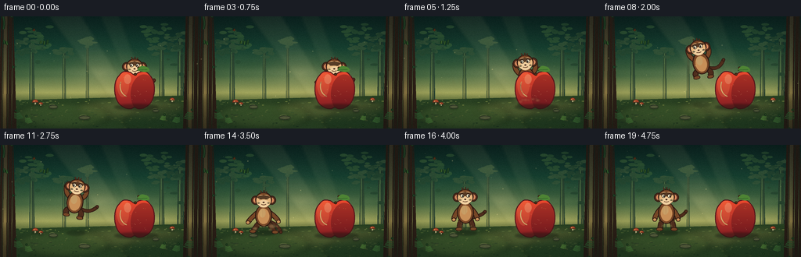
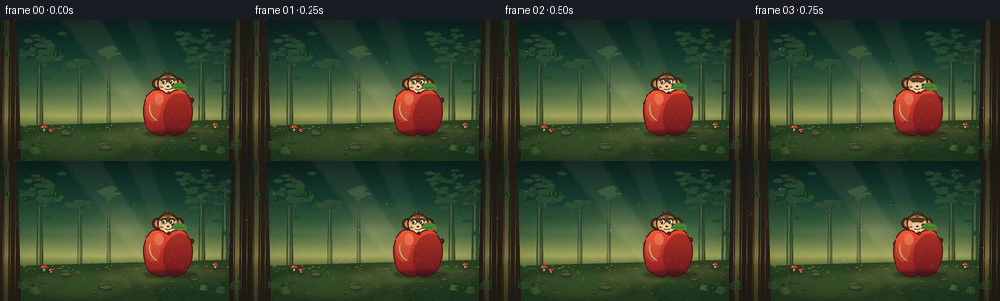
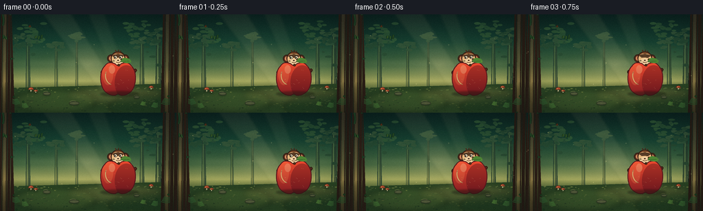
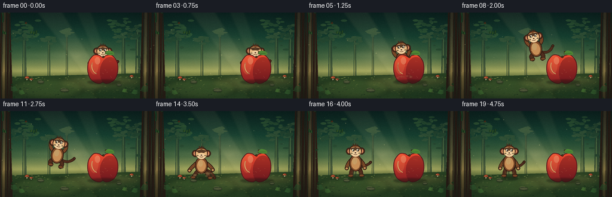

CODING AGENTS AS PIXEL WORLD MODELS
traex/DeepSeek-V4.1-Flash · dynamic_spatial_relationship_0053
点击播放 · 原生 RGB 像素
逐轮保存的候选
回放视频、检查图与代码变化。
每份候选均可单独播放。实际图片检查记录在下方工具轨迹中。
候选 01播放与检查图
点击播放 · 原生 RGB 像素


展开代码变化
--- 上一保存版本
+++ 本次保存版本
@@ -0,0 +1,804 @@
+from __future__ import annotations
+
+import math
+from pathlib import Path
+
+import numpy as np
+from PIL import Image, ImageChops, ImageDraw, ImageFilter
+
+import artifact_io
+
+
+WIDTH = 256
+HEIGHT = 144
+FPS = 4
+FRAME_COUNT = 20
+SS = 4
+CANVAS = (WIDTH * SS, HEIGHT * SS)
+ROOT = Path(__file__).resolve().parent
+
+
+def scaled(value: float) -> int:
+ return int(round(value * SS))
+
+
+def rgba(color: tuple[int, int, int], alpha: int = 255) -> tuple[int, int, int, int]:
+ return (*color, alpha)
+
+
+def ellipse_box(cx: float, cy: float, rx: float, ry: float) -> tuple[int, int, int, int]:
+ return (
+ scaled(cx - rx),
+ scaled(cy - ry),
+ scaled(cx + rx),
+ scaled(cy + ry),
+ )
+
+
+def polygon_ellipse(
+ cx: float, cy: float, rx: float, ry: float, count: int = 64
+) -> list[tuple[float, float]]:
+ return [
+ (
+ cx + rx * math.cos(2 * math.pi * i / count),
+ cy + ry * math.sin(2 * math.pi * i / count),
+ )
+ for i in range(count)
+ ]
+
+
+def catmull_rom_closed(points: list[tuple[float, float]], samples: int = 8) -> list[tuple[float, float]]:
+ result: list[tuple[float, float]] = []
+ count = len(points)
+ for index in range(count):
+ p0 = points[(index - 1) % count]
+ p1 = points[index]
+ p2 = points[(index + 1) % count]
+ p3 = points[(index + 2) % count]
+ for sample in range(samples):
+ t = sample / samples
+ t2 = t * t
+ t3 = t2 * t
+ x = 0.5 * (
+ 2 * p1[0]
+ + (-p0[0] + p2[0]) * t
+ + (2 * p0[0] - 5 * p1[0] + 4 * p2[0] - p3[0]) * t2
+ + (-p0[0] + 3 * p1[0] - 3 * p2[0] + p3[0]) * t3
+ )
+ y = 0.5 * (
+ 2 * p1[1]
+ + (-p0[1] + p2[1]) * t
+ + (2 * p0[1] - 5 * p1[1] + 4 * p2[1] - p3[1]) * t2
+ + (-p0[1] + 3 * p1[1] - 3 * p2[1] + p3[1]) * t3
+ )
+ result.append((x, y))
+ return result
+
+
+def quadratic_bezier(
+ p0: tuple[float, float],
+ p1: tuple[float, float],
+ p2: tuple[float, float],
+ samples: int = 18,
+) -> list[tuple[float, float]]:
+ points = []
+ for index in range(samples):
+ t = index / (samples - 1)
+ one = 1 - t
+ points.append(
+ (
+ one * one * p0[0] + 2 * one * t * p1[0] + t * t * p2[0],
+ one * one * p0[1] + 2 * one * t * p1[1] + t * t * p2[1],
+ )
+ )
+ return points
+
+
+def draw_capsule(
+ draw: ImageDraw.ImageDraw,
+ points: list[tuple[float, float]],
+ width: float,
+ fill: tuple[int, int, int] | tuple[int, int, int, int],
+ outline: tuple[int, int, int] | tuple[int, int, int, int] | None = None,
+ outline_width: float = 1.1,
+) -> None:
+ if outline is not None:
+ draw.line(points, fill=outline, width=scaled(width + 2 * outline_width), joint="curve")
+ radius = (width / 2 + outline_width) * SS
+ for x, y in (points[0], points[-1]):
+ draw.ellipse(
+ (x * SS - radius, y * SS - radius, x * SS + radius, y * SS + radius),
+ fill=outline,
+ )
+ draw.line(points, fill=fill, width=scaled(width), joint="curve")
+ radius = width * SS / 2
+ for x, y in (points[0], points[-1]):
+ draw.ellipse(
+ (x * SS - radius, y * SS - radius, x * SS + radius, y * SS + radius),
+ fill=fill,
+ )
+
+
+def draw_soft_ellipse(
+ layer: Image.Image,
+ cx: float,
+ cy: float,
+ rx: float,
+ ry: float,
+ color: tuple[int, int, int],
+ alpha: int,
+ blur: float = 0.0,
+) -> None:
+ if blur > 0:
+ radius = int(blur * SS)
+ pad = radius * 3
+ box = (
+ scaled(cx - rx) - pad,
+ scaled(cy - ry) - pad,
+ scaled(cx + rx) + pad,
+ scaled(cy + ry) + pad,
+ )
+ local = Image.new("RGBA", (box[2] - box[0], box[3] - box[1]), (0, 0, 0, 0))
+ local_draw = ImageDraw.Draw(local)
+ local_draw.ellipse(
+ (pad, pad, pad + 2 * scaled(rx), pad + 2 * scaled(ry)),
+ fill=rgba(color, alpha),
+ )
+ local = local.filter(ImageFilter.GaussianBlur(radius))
+ layer.alpha_composite(local, (box[0], box[1]))
+ else:
+ ImageDraw.Draw(layer).ellipse(ellipse_box(cx, cy, rx, ry), fill=rgba(color, alpha))
+
+
+def make_gradient() -> Image.Image:
+ y = np.linspace(0.0, 1.0, CANVAS[1], dtype=np.float32)
+ stops = [
+ (0.00, np.array([11, 35, 32], dtype=np.float32)),
+ (0.28, np.array([22, 62, 47], dtype=np.float32)),
+ (0.53, np.array([68, 103, 64], dtype=np.float32)),
+ (0.68, np.array([162, 166, 92], dtype=np.float32)),
+ (0.76, np.array([91, 109, 58], dtype=np.float32)),
+ (1.00, np.array([22, 43, 25], dtype=np.float32)),
+ ]
+ colors = np.zeros((len(y), 3), dtype=np.float32)
+ for index in range(len(stops) - 1):
+ p0, c0 = stops[index]
+ p1, c1 = stops[index + 1]
+ mask = (y >= p0) & (y <= p1)
+ amount = (y[mask] - p0) / (p1 - p0)
+ colors[mask] = c0[None, :] * (1 - amount[:, None]) + c1[None, :] * amount[:, None]
+ rows = np.repeat(colors[:, None, :], CANVAS[0], axis=1)
+ return Image.fromarray(np.clip(rows, 0, 255).astype(np.uint8), "RGB").convert("RGBA")
+
+
+def add_light_glow(image: Image.Image, cx: float, cy: float, radius: float) -> None:
+ yy, xx = np.mgrid[0 : CANVAS[1], 0 : CANVAS[0]].astype(np.float32)
+ distance = np.sqrt(
+ ((xx - cx * SS) / (radius * SS)) ** 2
+ + ((yy - cy * SS) / (radius * SS * 0.74)) ** 2
+ )
+ strength = np.clip(1.0 - distance, 0.0, 1.0) ** 2.2
+ glow = np.zeros((CANVAS[1], CANVAS[0], 4), dtype=np.uint8)
+ glow[:, :, 0] = 255
+ glow[:, :, 1] = 230
+ glow[:, :, 2] = 157
+ glow[:, :, 3] = (strength * 54).astype(np.uint8)
+ image.alpha_composite(Image.fromarray(glow, "RGBA"))
+
+
+def draw_leaf_cluster(
+ draw: ImageDraw.ImageDraw,
+ cx: float,
+ cy: float,
+ rx: float,
+ ry: float,
+ color: tuple[int, int, int],
+ seed: int,
+) -> None:
+ rng = np.random.default_rng(seed)
+ for _ in range(18):
+ angle = rng.uniform(0, 2 * math.pi)
+ distance = rng.uniform(0, 0.9)
+ x = cx + math.cos(angle) * rx * distance
+ y = cy + math.sin(angle) * ry * distance
+ leaf_rx = rng.uniform(2.2, 5.5)
+ leaf_ry = rng.uniform(1.1, 2.5)
+ draw.ellipse(
+ ellipse_box(x, y, leaf_rx, leaf_ry),
+ fill=rgba(color, int(rng.uniform(180, 245))),
+ )
+
+
+def draw_tree_trunk(
+ draw: ImageDraw.ImageDraw,
+ x: float,
+ top: float,
+ bottom: float,
+ width: float,
+ dark: tuple[int, int, int],
+ light: tuple[int, int, int],
+) -> None:
+ points = [
+ (x - width * 0.52, bottom),
+ (x - width * 0.38, top),
+ (x + width * 0.30, top),
+ (x + width * 0.48, bottom),
+ ]
+ draw.polygon([(px * SS, py * SS) for px, py in points], fill=rgba(dark, 255))
+ draw.line(
+ [(x - width * 0.13) * SS, top * SS, (x - width * 0.18) * SS, bottom * SS],
+ fill=rgba(light, 120),
+ width=scaled(width * 0.18),
+ )
+ for offset in (-0.26, 0.05, 0.27):
+ draw.line(
+ [(x + width * offset) * SS, top * SS, (x + width * (offset - 0.06)) * SS, bottom * SS],
+ fill=rgba((35, 25, 17), 70),
+ width=scaled(0.7),
+ )
+
+
+def draw_fern(
+ draw: ImageDraw.ImageDraw,
+ x: float,
+ y: float,
+ size: float,
+ color: tuple[int, int, int],
+ flip: float = 1.0,
+) -> None:
+ stem = quadratic_bezier((x, y), (x + flip * size * 0.12, y - size * 0.45), (x + flip * size * 0.18, y - size))
+ draw_capsule(draw, stem, 0.75, color, (24, 49, 25))
+ for index in range(5):
+ t = 0.23 + index * 0.14
+ sx = x + flip * size * (0.04 + 0.12 * t)
+ sy = y - size * (0.35 + 0.58 * t)
+ length = size * (0.33 - index * 0.028)
+ draw.line(
+ [(sx * SS, sy * SS), ((sx - length * flip) * SS, (sy - length * 0.27) * SS)],
+ fill=rgba(color, 235),
+ width=scaled(1.15),
+ )
+ draw.line(
+ [(sx * SS, sy * SS), ((sx + length * 0.62 * flip) * SS, (sy - length * 0.20) * SS)],
+ fill=rgba(color, 210),
+ width=scaled(1.0),
+ )
+
+
+def build_background() -> Image.Image:
+ image = make_gradient()
+ add_light_glow(image, 128, 74, 77)
+
+ distant = Image.new("RGBA", CANVAS, (0, 0, 0, 0))
+ draw = ImageDraw.Draw(distant)
+
+ # Soft mist bands establish depth behind the clearing.
+ for y, alpha in ((72, 32), (82, 25), (94, 20)):
+ draw_soft_ellipse(distant, 129, y, 120, 8, (231, 222, 156), alpha, blur=5)
+
+ # Distant trunks and low canopy.
+ for x, top, width, shade in (
+ (41, 34, 7, (40, 66, 50)),
+ (82, 42, 5, (47, 75, 53)),
+ (112, 30, 4, (49, 78, 55)),
+ (207, 38, 7, (40, 66, 48)),
+ (231, 28, 9, (35, 59, 44)),
+ ):
+ draw_tree_trunk(draw, x, top, 117, width, shade, (113, 132, 76))
+ draw_leaf_cluster(draw, x, top + 3, width * 2.8, width * 1.8, (50, 80, 53), int(x * 13))
+
+ # Midground foliage framing the clearing.
+ for seed, cx, cy, rx, ry, color in (
+ (5, 28, 49, 31, 24, (39, 72, 48)),
+ (7, 51, 26, 26, 18, (46, 83, 51)),
+ (11, 224, 39, 35, 26, (37, 68, 46)),
+ (13, 197, 20, 26, 17, (43, 79, 49)),
+ (17, 248, 67, 25, 34, (35, 62, 43)),
+ ):
+ draw_leaf_cluster(draw, cx, cy, rx, ry, color, seed)
+
+ # Ground plane and a softly lit path toward the apple.
+ draw.polygon(
+ [(0, scaled(108)), (CANVAS[0], scaled(101)), (CANVAS[0], CANVAS[1]), (0, CANVAS[1])],
+ fill=rgba((42, 68, 35), 255),
+ )
+ draw_soft_ellipse(distant, 169, 118, 72, 14, (151, 138, 72), 80, blur=5)
+ draw_soft_ellipse(distant, 80, 127, 60, 17, (78, 102, 48), 95, blur=4)
+ draw_soft_ellipse(distant, 221, 135, 63, 18, (25, 53, 29), 110, blur=3)
+
+ # Mottled ground texture.
+ rng = np.random.default_rng(41)
+ for _ in range(260):
+ x = rng.uniform(0, WIDTH)
+ y = rng.uniform(107, HEIGHT)
+ if rng.random() < 0.45:
+ color = (112, 127, 56)
+ elif rng.random() < 0.55:
+ color = (52, 82, 39)
+ else:
+ color = (31, 54, 31)
+ rx = rng.uniform(0.4, 2.2)
+ ry = rng.uniform(0.18, 0.75)
+ draw.ellipse(ellipse_box(x, y, rx, ry), fill=rgba(color, int(rng.uniform(35, 110))))
+
+ # Foreground trunks create a natural frame.
+ draw_tree_trunk(draw, 10, -4, 144, 23, (45, 31, 22), (133, 83, 48))
+ draw_tree_trunk(draw, 247, -4, 144, 25, (40, 28, 20), (115, 73, 44))
+
+ # Vines and edge foliage.
+ vine = quadratic_bezier((15, 0), (25, 29), (17, 65))
+ draw_capsule(draw, vine, 1.1, (46, 84, 45), (24, 47, 28))
+ for x, y, size, flip, color in (
+ (24, 142, 21, -1, (52, 97, 49)),
+ (37, 145, 17, -1, (71, 119, 53)),
+ (225, 145, 18, 1, (61, 110, 51)),
+ (241, 144, 24, 1, (45, 88, 44)),
+ (208, 140, 14, 1, (75, 119, 51)),
+ ):
+ draw_fern(draw, x, y, size, color, flip)
+
+ # Small mushrooms and stones give scale without distracting from the action.
+ for x, y, scale in ((45, 112, 1.0), (52, 114, 0.72), (220, 109, 0.85)):
+ draw_soft_ellipse(distant, x, y + 1.2, 4.4 * scale, 1.1 * scale, (29, 29, 17), 85, blur=1)
+ draw.rounded_rectangle(
+ (
+ scaled(x - 0.75 * scale),
+ scaled(y - 3.0 * scale),
+ scaled(x + 0.75 * scale),
+ scaled(y + 0.8 * scale),
+ ),
+ radius=scaled(0.6),
+ fill=rgba((229, 210, 163), 255),
+ )
+ draw.pieslice(
+ (
+ scaled(x - 4.0 * scale),
+ scaled(y - 5.5 * scale),
+ scaled(x + 4.0 * scale),
+ scaled(y + 1.8 * scale),
+ ),
+ 180,
+ 360,
+ fill=rgba((190, 77, 45), 255),
+ outline=rgba((98, 46, 31), 255),
+ width=scaled(0.7),
+ )
+ draw.ellipse(ellipse_box(x - 1.5 * scale, y - 3.0 * scale, 0.55, 0.55), fill=rgba((242, 196, 112), 230))
+
+ for x, y, rx, ry in ((68, 116, 5.5, 2.2), (199, 121, 4.2, 1.8), (108, 130, 7.2, 2.4)):
+ draw_soft_ellipse(distant, x, y + 1.2, rx, ry, (23, 36, 23), 95, blur=1)
+ draw.ellipse(ellipse_box(x, y, rx, ry), fill=rgba((83, 90, 58), 255), outline=rgba((43, 50, 35), 255), width=scaled(0.7))
+ draw.arc(
+ ellipse_box(x - rx * 0.25, y - ry * 0.8, rx * 0.65, ry * 0.8),
+ 190,
+ 330,
+ fill=rgba((145, 143, 91), 170),
+ width=scaled(0.55),
+ )
+
+ image.alpha_composite(distant)
+
+ # God rays are broad and translucent, keeping the apple dominant.
+ rays = Image.new("RGBA", CANVAS, (0, 0, 0, 0))
+ ray_draw = ImageDraw.Draw(rays)
+ for points, alpha in (
+ ([(62, 0), (105, 0), (174, 111), (146, 111)], 17),
+ ([(128, 0), (153, 0), (194, 110), (176, 110)], 12),
+ ):
+ ray_draw.polygon([(x * SS, y * SS) for x, y in points], fill=(255, 236, 166, alpha))
+ rays = rays.filter(ImageFilter.GaussianBlur(scaled(2.1)))
+ image.alpha_composite(rays)
+
+ # Fine grain prevents the procedural shapes from looking too sterile.
+ grain_rng = np.random.default_rng(87)
+ grain = grain_rng.normal(0, 4.5, (CANVAS[1], CANVAS[0], 1))
+ pixels = np.asarray(image.convert("RGB"), dtype=np.float32)
+ pixels = np.clip(pixels + grain, 0, 255)
+ return Image.fromarray(pixels.astype(np.uint8), "RGB").convert("RGBA")
+
+
+def make_apple() -> Image.Image:
+ layer = Image.new("RGBA", CANVAS, (0, 0, 0, 0))
+ cx, cy = 172.0, 93.5
+ control_points = [
+ (cx, cy - 18.5),
+ (cx - 6, cy - 21.8),
+ (cx - 14, cy - 22.4),
+ (cx - 20, cy - 17.2),
+ (cx - 24.4, cy - 9),
+ (cx - 25.2, cy + 3.8),
+ (cx - 21.3, cy + 16.4),
+ (cx - 14, cy + 23.2),
+ (cx - 5.2, cy + 25.2),
+ (cx, cy + 23.2),
+ (cx + 5.2, cy + 25.2),
+ (cx + 14, cy + 23.2),
+ (cx + 21.3, cy + 16.4),
+ (cx + 25.2, cy + 3.8),
+ (cx + 24.4, cy - 9),
+ (cx + 20, cy - 17.2),
+ (cx + 14, cy - 22.4),
+ (cx + 6, cy - 21.8),
+ ]
+ outline_points = catmull_rom_closed(control_points, samples=10)
+ outline_pixels = [(x * SS, y * SS) for x, y in outline_points]
+
+ mask = Image.new("L", CANVAS, 0)
+ ImageDraw.Draw(mask).polygon(outline_pixels, fill=255)
+
+ # Vertical red gradient with a warm upper-left falloff.
+ top_y, bottom_y = scaled(cy - 23), scaled(cy + 26)
+ gradient = np.zeros((CANVAS[1], CANVAS[0], 4), dtype=np.uint8)
+ yy = np.arange(CANVAS[1], dtype=np.float32)
+ amount = np.clip((yy - top_y) / max(1, bottom_y - top_y), 0, 1)
+ c0 = np.array([237, 74, 46], dtype=np.float32)
+ c1 = np.array([128, 28, 34], dtype=np.float32)
+ colors = c0[None, :] * (1 - amount[:, None]) + c1[None, :] * amount[:, None]
+ gradient[:, :, :3] = colors[:, None, :].astype(np.uint8)
+ gradient[:, :, 3] = np.asarray(mask)
+ layer = Image.alpha_composite(layer, Image.fromarray(gradient, "RGBA"))
+
+ shade = Image.new("RGBA", CANVAS, (0, 0, 0, 0))
+ shade_draw = ImageDraw.Draw(shade)
+ shade_draw.ellipse(ellipse_box(cx + 12, cy + 6, 17, 25), fill=rgba((74, 12, 22), 95))
+ shade_draw.ellipse(ellipse_box(cx - 15, cy - 8, 8, 18), fill=rgba((255, 147, 87), 55))
+ shade_draw.ellipse(ellipse_box(cx - 9, cy - 13, 4.5, 6.2), fill=rgba((255, 221, 161), 80))
+ shade.putalpha(ImageChops.multiply(shade.getchannel("A"), mask))
+ layer = Image.alpha_composite(layer, shade)
+
+ draw = ImageDraw.Draw(layer)
+ draw.line(
+ outline_pixels + [outline_pixels[0]],
+ fill=rgba((83, 23, 27), 255),
+ width=scaled(1.25),
+ joint="curve",
+ )
+ draw.arc(
+ (
+ scaled(cx - 19),
+ scaled(cy - 18),
+ scaled(cx + 4),
+ scaled(cy + 10),
+ ),
+ 104,
+ 205,
+ fill=rgba((255, 190, 126), 130),
+ width=scaled(1.3),
+ )
+
+ # A few tiny flecks make the surface feel like an actual apple.
+ rng = np.random.default_rng(18)
+ flecks = Image.new("RGBA", CANVAS, (0, 0, 0, 0))
+ fleck_draw = ImageDraw.Draw(flecks)
+ for _ in range(18):
+ x = cx + rng.uniform(-16, 16)
+ y = cy + rng.uniform(-16, 17)
+ radius = rng.uniform(0.18, 0.48)
+ fleck_draw.ellipse(
+ ellipse_box(x, y, radius, radius * 0.6),
+ fill=rgba((255, 216, 153), int(rng.uniform(45, 105))),
+ )
+ flecks.putalpha(ImageChops.multiply(flecks.getchannel("A"), mask))
+ layer = Image.alpha_composite(layer, flecks)
+
+ # Stem, leaf and a small cast shadow.
+ shadow = Image.new("RGBA", CANVAS, (0, 0, 0, 0))
+ draw_soft_ellipse(shadow, cx + 2, 116.4, 28, 4.0, (18, 22, 15), 105, blur=1.3)
+ layer = Image.alpha_composite(layer, shadow)
+
+ stem_points = quadratic_bezier((cx + 1, cy - 19.2), (cx + 2.8, cy - 24.5), (cx + 5.4, cy - 27.1))
+ draw_capsule(
+ ImageDraw.Draw(layer),
+ stem_points,
+ 2.0,
+ (86, 49, 24),
+ (49, 31, 19),
+ outline_width=0.8,
+ )
+ leaf_points = [
+ (cx + 4.0, cy - 25.2),
+ (cx + 9.0, cy - 29.8),
+ (cx + 16.7, cy - 28.0),
+ (cx + 18.5, cy - 23.2),
+ (cx + 11.0, cy - 22.1),
+ ]
+ smooth_leaf = catmull_rom_closed(leaf_points, samples=8)
+ leaf_draw = ImageDraw.Draw(layer)
+ leaf_draw.polygon([(x * SS, y * SS) for x, y in smooth_leaf], fill=rgba((78, 132, 52), 255))
+ leaf_draw.line(
+ [((cx + 5) * SS, (cy - 24.7) * SS), ((cx + 16) * SS, (cy - 25.2) * SS)],
+ fill=rgba((38, 86, 38), 230),
+ width=scaled(0.65),
+ )
+ leaf_draw.line(
+ [
+ ((cx + 3.2) * SS, (cy - 24.5) * SS),
+ ((cx + 4.8) * SS, (cy - 24.0) * SS),
+ ],
+ fill=rgba((41, 79, 34), 255),
+ width=scaled(1.2),
+ )
+ return layer
+
+
+def draw_monkey(
+ canvas: Image.Image,
+ cx: float,
+ cy: float,
+ angle_degrees: float,
+ pose: str,
+ phase: float,
+ look: float,
+ blink: bool,
+) -> None:
+ layer = Image.new("RGBA", CANVAS, (0, 0, 0, 0))
+ draw = ImageDraw.Draw(layer)
+ angle = math.radians(angle_degrees)
+ cos_a, sin_a = math.cos(angle), math.sin(angle)
+
+ def pt(x: float, y: float) -> tuple[float, float]:
+ xr = x * cos_a - y * sin_a
+ yr = x * sin_a + y * cos_a
+ return ((cx + xr) * SS, (cy + yr) * SS)
+
+ def ellipse(
+ x: float,
+ y: float,
+ rx: float,
+ ry: float,
+ fill: tuple[int, int, int] | tuple[int, int, int, int],
+ outline: tuple[int, int, int] | tuple[int, int, int, int] | None = None,
+ width: float = 1.0,
+ ) -> None:
+ points = [pt(x + rx * math.cos(2 * math.pi * i / 56), y + ry * math.sin(2 * math.pi * i / 56)) for i in range(56)]
+ draw.polygon(points, fill=fill)
+ if outline is not None:
+ draw.line(points + [points[0]], fill=outline, width=scaled(width), joint="curve")
+
+ def path(points: list[tuple[float, float]], width: float, fill, outline=None, outline_width: float = 1.0) -> None:
+ draw_capsule(draw, [pt(x, y) for x, y in points], width, fill, outline, outline_width)
+
+ outline = (45, 26, 18, 255)
+ fur = (119, 70, 38, 255)
+ dark_fur = (78, 44, 28, 255)
+ light_fur = (199, 143, 87, 255)
+ face = (230, 183, 126, 255)
+ muzzle = (239, 206, 158, 255)
+ inner_ear = (210, 132, 91, 255)
+
+ # Tail: visible beyond the apple even while the body is hidden.
+ tail_sway = math.sin(phase * math.tau) * 1.8
+ if pose == "jump":
+ tail = quadratic_bezier((7, 8), (20, 15 + tail_sway), (29, 3 - tail_sway * 0.4))
+ elif pose == "land":
+ tail = quadratic_bezier((7, 9), (17, 13 + tail_sway), (22, 22 - tail_sway * 0.3))
+ else:
+ tail = quadratic_bezier((7, 8), (20, 8 + tail_sway), (25, -1 - tail_sway))
+ path(tail, 3.2, dark_fur, outline, 0.8)
+ ellipse(tail[-1][0], tail[-1][1], 1.8, 1.8, dark_fur, outline, 0.65)
+
+ # Legs and feet.
+ if pose == "jump":
+ left_leg = quadratic_bezier((-5, 10), (-13, 13), (-8, 18))
+ right_leg = quadratic_bezier((6, 10), (13, 15), (8, 20))
+ elif pose == "land":
+ left_leg = quadratic_bezier((-5, 10), (-10, 16), (-13, 21))
+ right_leg = quadratic_bezier((6, 10), (11, 17), (14, 22))
+ else:
+ left_leg = quadratic_bezier((-5, 10), (-8, 16), (-8, 22))
+ right_leg = quadratic_bezier((6, 10), (9, 16), (9, 22))
+ path(left_leg, 5.2, dark_fur, outline, 1.0)
+ path(right_leg, 5.2, dark_fur, outline, 1.0)
+ ellipse(left_leg[-1][0] - 0.8, left_leg[-1][1] + 0.5, 4.1, 2.1, fur, outline, 0.85)
+ ellipse(right_leg[-1][0] + 0.8, right_leg[-1][1] + 0.5, 4.1, 2.1, fur, outline, 0.85)
+
+ # Arms depend on the jump beat.
+ if pose == "jump":
+ left_arm = quadratic_bezier((-7, -4), (-15, -10), (-13, -19))
+ right_arm = quadratic_bezier((7, -4), (15, -9), (12, -18))
+ elif pose == "land":
+ left_arm = quadratic_bezier((-7, -3), (-16, 4), (-20, 10))
+ right_arm = quadratic_bezier((7, -3), (16, 3), (19, 9))
+ elif pose == "peek":
+ left_arm = quadratic_bezier((-7, -4), (-17, 0), (-22, 2))
+ right_arm = quadratic_bezier((7, -4), (17, 0), (22, 2))
+ else:
+ left_arm = quadratic_bezier((-7, -4), (-14, 3), (-15, 10))
+ right_arm = quadratic_bezier((7, -4), (14, 3), (15, 10))
+ path(left_arm, 4.8, fur, outline, 1.0)
+ path(right_arm, 4.8, fur, outline, 1.0)
+ ellipse(left_arm[-1][0], left_arm[-1][1] + 0.2, 2.5, 2.2, light_fur, outline, 0.75)
+ ellipse(right_arm[-1][0], right_arm[-1][1] + 0.2, 2.5, 2.2, light_fur, outline, 0.75)
+
+ # Body and chest.
+ ellipse(0, 1.5, 10.3, 13.7, fur, outline, 1.2)
+ ellipse(0, 2.2, 7.3, 10.1, light_fur, None)
+ ellipse(-1.5, -2.0, 4.0, 5.8, (215, 164, 106, 220), None)
+
+ # Ears and head.
+ ellipse(-10.2, -18.4, 5.2, 5.6, dark_fur, outline, 1.0)
+ ellipse(10.2, -18.4, 5.2, 5.6, dark_fur, outline, 1.0)
+ ellipse(-10.2, -18.4, 3.0, 3.3, inner_ear, None)
+ ellipse(10.2, -18.4, 3.0, 3.3, inner_ear, None)
+ ellipse(0, -19.0, 10.2, 9.2, fur, outline, 1.25)
+
+ # Face mask, muzzle and facial features.
+ ellipse(-2.8, -17.8, 6.4, 7.4, face, None)
+ ellipse(2.8, -17.8, 6.4, 7.4, face, None)
+ ellipse(0, -13.8, 6.8, 4.8, muzzle, None)
+ ellipse(0, -22.2, 8.0, 2.4, (91, 53, 33, 215), None)
+
+ eye_y = -20.2
+ eye_dx = 3.8
+ if blink:
+ draw.arc(
+ (pt(-eye_dx - 2.1, eye_y)[0], pt(-eye_dx - 2.1, eye_y)[1], pt(-eye_dx + 2.1, eye_y + 1.1)[0], pt(-eye_dx + 2.1, eye_y + 1.1)[1]),
+ 200,
+ 340,
+ fill=rgba((45, 27, 18), 255),
+ width=scaled(0.8),
+ )
+ draw.arc(
+ (pt(eye_dx - 2.1, eye_y)[0], pt(eye_dx - 2.1, eye_y)[1], pt(eye_dx + 2.1, eye_y + 1.1)[0], pt(eye_dx + 2.1, eye_y + 1.1)[1]),
+ 200,
+ 340,
+ fill=rgba((45, 27, 18), 255),
+ width=scaled(0.8),
+ )
+ else:
+ ellipse(-eye_dx, eye_y, 2.15, 2.35, (251, 239, 203, 255), outline, 0.55)
+ ellipse(eye_dx, eye_y, 2.15, 2.35, (251, 239, 203, 255), outline, 0.55)
+ pupil_x = 0.65 * look
+ ellipse(-eye_dx + pupil_x, eye_y + 0.2, 0.95, 1.25, (27, 22, 17, 255), None)
+ ellipse(eye_dx + pupil_x, eye_y + 0.2, 0.95, 1.25, (27, 22, 17, 255), None)
+ ellipse(-eye_dx + pupil_x - 0.3, eye_y - 0.15, 0.26, 0.3, (255, 255, 238, 235), None)
+ ellipse(eye_dx + pupil_x - 0.3, eye_y - 0.15, 0.26, 0.3, (255, 255, 238, 235), None)
+
+ # Brows and a friendly smile.
+ draw.line(
+ [pt(-5.8, -23.1), pt(-2.2, -23.7)],
+ fill=rgba((70, 39, 24), 235),
+ width=scaled(0.8),
+ )
+ draw.line(
+ [pt(2.2, -23.7), pt(5.8, -23.1)],
+ fill=rgba((70, 39, 24), 235),
+ width=scaled(0.8),
+ )
+ ellipse(0, -15.6, 1.2, 0.8, (67, 39, 28, 255), None)
+ smile = quadratic_bezier((-3.0, -13.2), (0, -11.6), (3.0, -13.2))
+ draw.line([pt(x, y) for x, y in smile], fill=rgba((91, 49, 31), 235), width=scaled(0.8))
+ ellipse(-6.3, -14.8, 1.6, 0.85, (220, 117, 89, 85), None)
+ ellipse(6.3, -14.8, 1.6, 0.85, (220, 117, 89, 85), None)
+
+ # Hair tuft.
+ for x0, y0, x1, y1 in ((-2.2, -27.6, -4.2, -30.6), (0.2, -28.0, 0.8, -31.1), (2.4, -27.4, 4.2, -30.0)):
+ draw.line([pt(x0, y0), pt(x1, y1)], fill=outline, width=scaled(1.55))
+ draw.line([pt(x0, y0), pt(x1, y1)], fill=dark_fur, width=scaled(0.9))
+
+ canvas.alpha_composite(layer)
+
+
+def add_dust(image: Image.Image, cx: float, ground_y: float, strength: float, phase: float) -> None:
+ if strength <= 0:
+ return
+ layer = Image.new("RGBA", CANVAS, (0, 0, 0, 0))
+ rng = np.random.default_rng(int(cx * 17 + phase * 101))
+ for index in range(8):
+ angle = rng.uniform(math.pi, 2 * math.pi)
+ distance = rng.uniform(3, 17) * (0.5 + strength)
+ x = cx + math.cos(angle) * distance
+ y = ground_y - 1.2 + math.sin(angle) * distance * 0.28 - rng.uniform(0, 3)
+ radius = rng.uniform(1.2, 3.6) * (0.55 + strength * 0.8)
+ draw_soft_ellipse(
+ layer,
+ x,
+ y,
+ radius,
+ radius * 0.64,
+ (214, 184, 119),
+ int(80 * strength),
+ blur=1.2,
+ )
+ image.alpha_composite(layer)
+
+
+def add_motes(image: Image.Image, frame_index: int) -> None:
+ layer = Image.new("RGBA", CANVAS, (0, 0, 0, 0))
+ draw = ImageDraw.Draw(layer)
+ for index in range(13):
+ x = (17 + index * 47 + frame_index * (0.9 + 0.17 * index)) % WIDTH
+ base_y = 26 + (index * 23) % 82
+ y = base_y - 0.9 * frame_index - math.sin(frame_index * 0.8 + index) * 1.8
+ alpha = 45 + (index % 4) * 12
+ radius = 0.35 + (index % 3) * 0.18
+ draw.ellipse(ellipse_box(x, y, radius, radius), fill=(255, 232, 158, alpha))
+ image.alpha_composite(layer)
+
+
+def add_vignette(image: Image.Image) -> Image.Image:
+ yy, xx = np.mgrid[0 : CANVAS[1], 0 : CANVAS[0]].astype(np.float32)
+ nx = (xx / CANVAS[0] - 0.5) * 2
+ ny = (yy / CANVAS[1] - 0.5) * 2
+ edge = np.clip((nx * nx * 0.72 + ny * ny) - 0.34, 0, 1)
+ alpha = (edge * 72).astype(np.uint8)
+ overlay = np.zeros((CANVAS[1], CANVAS[0], 4), dtype=np.uint8)
+ overlay[:, :, :3] = (8, 17, 16)
+ overlay[:, :, 3] = alpha
+ image = image.copy()
+ image.alpha_composite(Image.fromarray(overlay, "RGBA"))
+ return image
+
+
+def monkey_motion(frame_index: int) -> tuple[float, float, float, str, float, float, bool]:
+ # Hold, spring, arc left, land, settle. The first beat clearly shows
+ # the monkey peeking from behind the apple.
+ centers_x = [172, 172, 171, 171, 169, 161, 151, 140, 128, 117, 106, 96, 88, 83, 81, 82, 83, 84, 84, 84]
+ centers_y = [83.0, 83.0, 82.7, 82.8, 84.3, 78.0, 69.5, 62.5, 58.8, 59.8, 64.3, 72.3, 81.0, 88.2, 89.5, 87.4, 85.4, 85.8, 86.0, 86.0]
+ angles = [0, 0, -1, 1, 4, -5, -10, -14, -11, -5, 3, 8, 7, 3, 0, -2, -1, 0, 0, 0]
+
+ cx = centers_x[frame_index]
+ cy = centers_y[frame_index]
+ angle = angles[frame_index]
+ if frame_index <= 4:
+ pose = "peek"
+ elif frame_index <= 12:
+ pose = "jump"
+ elif frame_index <= 14:
+ pose = "land"
+ else:
+ pose = "settle"
+
+ # Tiny secondary motion keeps the held poses alive.
+ if frame_index <= 4:
+ cy += math.sin(frame_index * 0.9) * 0.32
+ elif frame_index >= 16:
+ cy += math.sin((frame_index - 15) * 1.3) * 0.18
+
+ look = -1.0 if frame_index <= 13 else 1.0
+ blink = frame_index in (3, 14)
+ return cx, cy, angle, pose, frame_index / FRAME_COUNT, look, blink
+
+
+def render() -> None:
+ background = build_background()
+ apple = make_apple()
+ frames: list[np.ndarray] = []
+
+ for frame_index in range(FRAME_COUNT):
+ image = background.copy()
+ cx, cy, angle, pose, phase, look, blink = monkey_motion(frame_index)
+
+ # Contact shadow, softened and reduced as the monkey leaves the ground.
+ height = max(0.0, 112.0 - (cy + 22.0))
+ shadow_alpha = int(np.clip(112 - height * 2.1, 38, 112))
+ shadow_rx = np.clip(13.5 - height * 0.08, 8.0, 13.5)
+ draw_soft_ellipse(
+ image,
+ cx + 1.0,
+ 113.2,
+ shadow_rx,
+ 3.2,
+ (15, 24, 15),
+ shadow_alpha,
+ blur=1.1,
+ )
+
+ draw_monkey(image, cx, cy, angle, pose, phase, look, blink)
+ image.alpha_composite(apple)
+
+ if 4 <= frame_index <= 7:
+ add_dust(image, 160, 111.5, (frame_index - 3) / 4.0, frame_index)
+ if 12 <= frame_index <= 16:
+ add_dust(image, 84, 112.0, max(0.0, 1.0 - abs(frame_index - 14) / 3.0), frame_index)
+
+ add_motes(image, frame_index)
+ image = add_vignette(image)
+ final = image.convert("RGB").resize((WIDTH, HEIGHT), Image.Resampling.LANCZOS)
+ frames.append(np.asarray(final, dtype=np.uint8))
+
+ artifact_io.save(np.stack(frames), ROOT)
+
+
+if __name__ == "__main__":
+ render()
候选 02播放与检查图
点击播放 · 原生 RGB 像素

展开代码变化
--- 上一保存版本
+++ 本次保存版本
@@ -556,7 +556,21 @@
draw.line(points + [points[0]], fill=outline, width=scaled(width), joint="curve")
def path(points: list[tuple[float, float]], width: float, fill, outline=None, outline_width: float = 1.0) -> None:
- draw_capsule(draw, [pt(x, y) for x, y in points], width, fill, outline, outline_width)
+ pixel_points = [pt(x, y) for x, y in points]
+ if outline is not None:
+ draw.line(
+ pixel_points,
+ fill=outline,
+ width=scaled(width + 2 * outline_width),
+ joint="curve",
+ )
+ radius = (width / 2 + outline_width) * SS
+ for x, y in (pixel_points[0], pixel_points[-1]):
+ draw.ellipse((x - radius, y - radius, x + radius, y + radius), fill=outline)
+ draw.line(pixel_points, fill=fill, width=scaled(width), joint="curve")
+ radius = width * SS / 2
+ for x, y in (pixel_points[0], pixel_points[-1]):
+ draw.ellipse((x - radius, y - radius, x + radius, y + radius), fill=fill)
outline = (45, 26, 18, 255)
fur = (119, 70, 38, 255)
候选 03播放与检查图
点击播放 · 原生 RGB 像素

展开代码变化
--- 上一保存版本
+++ 本次保存版本
@@ -531,8 +531,8 @@
look: float,
blink: bool,
) -> None:
- layer = Image.new("RGBA", CANVAS, (0, 0, 0, 0))
- draw = ImageDraw.Draw(layer)
+ mask = Image.new("L", CANVAS, 0)
+ mask_draw = ImageDraw.Draw(mask)
angle = math.radians(angle_degrees)
cos_a, sin_a = math.cos(angle), math.sin(angle)
@@ -551,26 +551,26 @@
width: float = 1.0,
) -> None:
points = [pt(x + rx * math.cos(2 * math.pi * i / 56), y + ry * math.sin(2 * math.pi * i / 56)) for i in range(56)]
- draw.polygon(points, fill=fill)
+ mask_draw.polygon(points, fill=255)
if outline is not None:
- draw.line(points + [points[0]], fill=outline, width=scaled(width), joint="curve")
+ mask_draw.line(points + [points[0]], fill=255, width=scaled(width), joint="curve")
def path(points: list[tuple[float, float]], width: float, fill, outline=None, outline_width: float = 1.0) -> None:
pixel_points = [pt(x, y) for x, y in points]
if outline is not None:
- draw.line(
+ mask_draw.line(
pixel_points,
- fill=outline,
+ fill=255,
width=scaled(width + 2 * outline_width),
joint="curve",
)
radius = (width / 2 + outline_width) * SS
for x, y in (pixel_points[0], pixel_points[-1]):
- draw.ellipse((x - radius, y - radius, x + radius, y + radius), fill=outline)
- draw.line(pixel_points, fill=fill, width=scaled(width), joint="curve")
+ mask_draw.ellipse((x - radius, y - radius, x + radius, y + radius), fill=255)
+ mask_draw.line(pixel_points, fill=255, width=scaled(width), joint="curve")
radius = width * SS / 2
for x, y in (pixel_points[0], pixel_points[-1]):
- draw.ellipse((x - radius, y - radius, x + radius, y + radius), fill=fill)
+ mask_draw.ellipse((x - radius, y - radius, x + radius, y + radius), fill=255)
outline = (45, 26, 18, 255)
fur = (119, 70, 38, 255)
@@ -642,53 +642,97 @@
ellipse(0, -13.8, 6.8, 4.8, muzzle, None)
ellipse(0, -22.2, 8.0, 2.4, (91, 53, 33, 215), None)
+ # Hair tuft.
+ for x0, y0, x1, y1 in ((-2.2, -27.6, -4.2, -30.6), (0.2, -28.0, 0.8, -31.1), (2.4, -27.4, 4.2, -30.0)):
+ mask_draw.line([pt(x0, y0), pt(x1, y1)], fill=255, width=scaled(1.55))
+
+ # Paint the detailed monkey once, then use the union silhouette as its alpha.
+ # This prevents the gap between separately outlined parts from revealing the
+ # apple through the middle of the body.
+ layer = Image.new("RGBA", CANVAS, (0, 0, 0, 0))
+ draw = ImageDraw.Draw(layer)
+ angle = math.radians(angle_degrees)
+ cos_a, sin_a = math.cos(angle), math.sin(angle)
+
+ def layer_pt(x: float, y: float) -> tuple[float, float]:
+ return ((cx + x * cos_a - y * sin_a) * SS, (cy + x * sin_a + y * cos_a) * SS)
+
+ def layer_ellipse(x: float, y: float, rx: float, ry: float, fill, outline=None, width: float = 1.0) -> None:
+ points = [layer_pt(x + rx * math.cos(2 * math.pi * i / 56), y + ry * math.sin(2 * math.pi * i / 56)) for i in range(56)]
+ draw.polygon(points, fill=fill)
+ if outline is not None:
+ draw.line(points + [points[0]], fill=outline, width=scaled(width), joint="curve")
+
+ def layer_path(points, width: float, fill, outline=None, outline_width: float = 1.0) -> None:
+ pixel_points = [layer_pt(x, y) for x, y in points]
+ if outline is not None:
+ draw.line(pixel_points, fill=outline, width=scaled(width + 2 * outline_width), joint="curve")
+ radius = (width / 2 + outline_width) * SS
+ for x, y in (pixel_points[0], pixel_points[-1]):
+ draw.ellipse((x - radius, y - radius, x + radius, y + radius), fill=outline)
+ draw.line(pixel_points, fill=fill, width=scaled(width), joint="curve")
+ radius = width * SS / 2
+ for x, y in (pixel_points[0], pixel_points[-1]):
+ draw.ellipse((x - radius, y - radius, x + radius, y + radius), fill=fill)
+
+ # Rebuild the painted figure in the same order. The silhouette above is the
+ # authoritative coverage, so internal seams do not show the foreground apple.
+ layer_path(tail, 3.2, dark_fur, outline, 0.8)
+ layer_ellipse(tail[-1][0], tail[-1][1], 1.8, 1.8, dark_fur, outline, 0.65)
+ layer_path(left_leg, 5.2, dark_fur, outline, 1.0)
+ layer_path(right_leg, 5.2, dark_fur, outline, 1.0)
+ layer_ellipse(left_leg[-1][0] - 0.8, left_leg[-1][1] + 0.5, 4.1, 2.1, fur, outline, 0.85)
+ layer_ellipse(right_leg[-1][0] + 0.8, right_leg[-1][1] + 0.5, 4.1, 2.1, fur, outline, 0.85)
+ layer_path(left_arm, 4.8, fur, outline, 1.0)
+ layer_path(right_arm, 4.8, fur, outline, 1.0)
+ layer_ellipse(left_arm[-1][0], left_arm[-1][1] + 0.2, 2.5, 2.2, light_fur, outline, 0.75)
+ layer_ellipse(right_arm[-1][0], right_arm[-1][1] + 0.2, 2.5, 2.2, light_fur, outline, 0.75)
+ layer_ellipse(0, 1.5, 10.3, 13.7, fur, outline, 1.2)
+ layer_ellipse(0, 2.2, 7.3, 10.1, light_fur, None)
+ layer_ellipse(-1.5, -2.0, 4.0, 5.8, (215, 164, 106, 220), None)
+ layer_ellipse(-10.2, -18.4, 5.2, 5.6, dark_fur, outline, 1.0)
+ layer_ellipse(10.2, -18.4, 5.2, 5.6, dark_fur, outline, 1.0)
+ layer_ellipse(-10.2, -18.4, 3.0, 3.3, inner_ear, None)
+ layer_ellipse(10.2, -18.4, 3.0, 3.3, inner_ear, None)
+ layer_ellipse(0, -19.0, 10.2, 9.2, fur, outline, 1.25)
+ layer_ellipse(-2.8, -17.8, 6.4, 7.4, face, None)
+ layer_ellipse(2.8, -17.8, 6.4, 7.4, face, None)
+ layer_ellipse(0, -13.8, 6.8, 4.8, muzzle, None)
+ layer_ellipse(0, -22.2, 8.0, 2.4, (91, 53, 33, 215), None)
+
eye_y = -20.2
eye_dx = 3.8
if blink:
- draw.arc(
- (pt(-eye_dx - 2.1, eye_y)[0], pt(-eye_dx - 2.1, eye_y)[1], pt(-eye_dx + 2.1, eye_y + 1.1)[0], pt(-eye_dx + 2.1, eye_y + 1.1)[1]),
- 200,
- 340,
- fill=rgba((45, 27, 18), 255),
- width=scaled(0.8),
- )
- draw.arc(
- (pt(eye_dx - 2.1, eye_y)[0], pt(eye_dx - 2.1, eye_y)[1], pt(eye_dx + 2.1, eye_y + 1.1)[0], pt(eye_dx + 2.1, eye_y + 1.1)[1]),
- 200,
- 340,
- fill=rgba((45, 27, 18), 255),
- width=scaled(0.8),
- )
+ for sign in (-1, 1):
+ box = (
+ layer_pt(sign * eye_dx - 2.1, eye_y)[0],
+ layer_pt(sign * eye_dx - 2.1, eye_y)[1],
+ layer_pt(sign * eye_dx + 2.1, eye_y + 1.1)[0],
+ layer_pt(sign * eye_dx + 2.1, eye_y + 1.1)[1],
+ )
+ draw.arc(box, 200, 340, fill=rgba((45, 27, 18), 255), width=scaled(0.8))
else:
- ellipse(-eye_dx, eye_y, 2.15, 2.35, (251, 239, 203, 255), outline, 0.55)
- ellipse(eye_dx, eye_y, 2.15, 2.35, (251, 239, 203, 255), outline, 0.55)
+ layer_ellipse(-eye_dx, eye_y, 2.15, 2.35, (251, 239, 203, 255), outline, 0.55)
+ layer_ellipse(eye_dx, eye_y, 2.15, 2.35, (251, 239, 203, 255), outline, 0.55)
pupil_x = 0.65 * look
- ellipse(-eye_dx + pupil_x, eye_y + 0.2, 0.95, 1.25, (27, 22, 17, 255), None)
- ellipse(eye_dx + pupil_x, eye_y + 0.2, 0.95, 1.25, (27, 22, 17, 255), None)
- ellipse(-eye_dx + pupil_x - 0.3, eye_y - 0.15, 0.26, 0.3, (255, 255, 238, 235), None)
- ellipse(eye_dx + pupil_x - 0.3, eye_y - 0.15, 0.26, 0.3, (255, 255, 238, 235), None)
-
- # Brows and a friendly smile.
- draw.line(
- [pt(-5.8, -23.1), pt(-2.2, -23.7)],
- fill=rgba((70, 39, 24), 235),
- width=scaled(0.8),
- )
- draw.line(
- [pt(2.2, -23.7), pt(5.8, -23.1)],
- fill=rgba((70, 39, 24), 235),
- width=scaled(0.8),
- )
- ellipse(0, -15.6, 1.2, 0.8, (67, 39, 28, 255), None)
+ layer_ellipse(-eye_dx + pupil_x, eye_y + 0.2, 0.95, 1.25, (27, 22, 17, 255), None)
+ layer_ellipse(eye_dx + pupil_x, eye_y + 0.2, 0.95, 1.25, (27, 22, 17, 255), None)
+ layer_ellipse(-eye_dx + pupil_x - 0.3, eye_y - 0.15, 0.26, 0.3, (255, 255, 238, 235), None)
+ layer_ellipse(eye_dx + pupil_x - 0.3, eye_y - 0.15, 0.26, 0.3, (255, 255, 238, 235), None)
+
+ draw.line([layer_pt(-5.8, -23.1), layer_pt(-2.2, -23.7)], fill=rgba((70, 39, 24), 235), width=scaled(0.8))
+ draw.line([layer_pt(2.2, -23.7), layer_pt(5.8, -23.1)], fill=rgba((70, 39, 24), 235), width=scaled(0.8))
+ layer_ellipse(0, -15.6, 1.2, 0.8, (67, 39, 28, 255), None)
smile = quadratic_bezier((-3.0, -13.2), (0, -11.6), (3.0, -13.2))
- draw.line([pt(x, y) for x, y in smile], fill=rgba((91, 49, 31), 235), width=scaled(0.8))
- ellipse(-6.3, -14.8, 1.6, 0.85, (220, 117, 89, 85), None)
- ellipse(6.3, -14.8, 1.6, 0.85, (220, 117, 89, 85), None)
-
- # Hair tuft.
+ draw.line([layer_pt(x, y) for x, y in smile], fill=rgba((91, 49, 31), 235), width=scaled(0.8))
+ layer_ellipse(-6.3, -14.8, 1.6, 0.85, (220, 117, 89, 85), None)
+ layer_ellipse(6.3, -14.8, 1.6, 0.85, (220, 117, 89, 85), None)
+
for x0, y0, x1, y1 in ((-2.2, -27.6, -4.2, -30.6), (0.2, -28.0, 0.8, -31.1), (2.4, -27.4, 4.2, -30.0)):
- draw.line([pt(x0, y0), pt(x1, y1)], fill=outline, width=scaled(1.55))
- draw.line([pt(x0, y0), pt(x1, y1)], fill=dark_fur, width=scaled(0.9))
+ draw.line([layer_pt(x0, y0), layer_pt(x1, y1)], fill=outline, width=scaled(1.55))
+ draw.line([layer_pt(x0, y0), layer_pt(x1, y1)], fill=dark_fur, width=scaled(0.9))
+
+ layer.putalpha(ImageChops.multiply(layer.getchannel("A"), mask))
canvas.alpha_composite(layer)
可观测工具轨迹
实际执行的命令与返回图片。
命令 1exit 0
/bin/bash -c "pwd && rg --files -g 'prompt.txt' -g 'GENERATION_RULES.md' -g 'task_spec.json' -g '"'!node_modules'"' -g '"'!venv'"'"
命令 2exit 0
/bin/bash -c 'ls -la'
命令 3exit 0
/bin/bash -c 'cat prompt.txt'
命令 4exit 0
/bin/bash -c 'cat GENERATION_RULES.md'
命令 5exit 0
/bin/bash -c 'cat task_spec.json'
命令 6exit 0
/bin/bash -c "sed -n '1,240p' artifact_io.py && sed -n '1,240p' player_template.html"
命令 7exit 0
/bin/bash -c "python - <<'PY'
import PIL, numpy
print('Pillow', PIL.__version__)
print('NumPy', numpy.__version__)
PY"命令 8exit 1
/bin/bash -c 'python generate.py'
命令 9exit 0
/bin/bash -c 'python generate.py'
命令 10exit 0
/bin/bash -c 'python generate.py'
命令 11exit 0
/bin/bash -c "python - <<'PY'
from PIL import Image
im=Image.open('inspection.png')
print(im.size)
# Crop first, middle, and last sections for a closer proofing pass.
im.crop((0, 0, 1024, 165)).save('.tmp/inspection_top.png')
PY"命令 12exit 0
/bin/bash -c 'command -v chafa || true; command -v viu || true; command -v jp2 || true; command -v img2txt || true'
命令 13exit 0
/bin/bash -c "ls -lh frames pixels.npz index.html inspection.png transition_check.png generate.py && python - <<'PY'
from pathlib import Path
from PIL import Image
import numpy as np
frames=sorted(Path('frames').glob('*.png'))
print('frame_count',len(frames))
for p in [frames[0],frames[5],frames[9],frames[12],frames[15],frames[-1]]:
a=np.asarray(Image.open(p))
print(p.name,a.shape,a.min(),a.max(),round(float(a.mean()),2))
PY"命令 14exit 0
/bin/bash -c "python - <<'PY'
from PIL import Image
import numpy as np
from pathlib import Path
# Coarse silhouette proof: R marks red apple pixels, M marks warm/dark moving pixels.
for idx in (0,4,6,8,10,12,14,19):
a=np.asarray(Image.open(f'frames/{idx:02d}.png')).astype(float)
# Downsample with averaging; print only the action region.
im=Image.fromarray(a.astype(np.uint8)).crop((36,36,226,130)).resize((76,38),Image.Resampling.BOX)
x=np.asarray(im).astype(float); r,g,b=x[:,:,0],x[:,:,1],x[:,:,2]
red=(r>105)&(r>g*1.55)&(r>b*1.35)
fur=(r>70)&(r>g*1.08)&(g>b*1.05)&(r>b*1.25)&~red
face=(r>175)&(g>115)&(b>70)&(r>b*1.3)&~red
chars=[]
for yy in range(red.shape[0]):
row=''
for xx in range(red.shape[1]):
if red[yy,xx]: row+='R'
elif face[yy,xx]: row+='M'
elif fur[yy,xx]: row+='m'
else: row+=' '
chars.append(row.rstrip())
print(f'--- frame {idx:02d} ({idx/4:.2f}s) ---')
print('\\n'.join(chars))
PY"命令 15exit 1
/bin/bash -c 'python generate.py'
命令 16exit 0
/bin/bash -c "nl -ba generate.py | sed -n '580,700p'"
命令 17exit 0
/bin/bash -c 'python generate.py'
命令 18exit 0
/bin/bash -c "python -m py_compile generate.py && python - <<'PY'
import base64, json, re
from pathlib import Path
import numpy as np
from PIL import Image
html = Path('index.html').read_text()
m = re.search(r'const DATA=(\\{.*?\\}),W=DATA\\.width', html)
assert m, 'player payload missing'
data = json.loads(m.group(1))
def unpack(s):
raw = base64.b64decode(s)
return np.frombuffer(raw, dtype='<u4').astype(np.uint32)
frames = [unpack(data['first']).reshape(data['height'], data['width'])]
for encoded in data['deltas']:
current = frames[-1].copy()
packet = unpack(encoded)
i = 0
while i < len(packet):
start, count = int(packet[i]), int(packet[i+1])
i += 2
current.reshape(-1)[start:start+count] = packet[i:i+count]
i += count
frames.append(current)
saved = np.stack([
np.asarray(Image.open(f'frames/{i:02d}.png')).astype(np.uint32)
for i in range(data['frames'])
])
packed = (saved[:,:,:,0] << 16) | (saved[:,:,:,1] << 8) | saved[:,:,:,2]
rebuilt = np.stack(frames)
assert np.array_equal(packed, rebuilt), 'player delta stream does not reconstruct frames'
assert data['frames'] == 20 and data['fps'] == 4.0 and not data['audio']
assert all(Image.open(f'frames/{i:02d}.png').size == (256, 144) for i in range(20))
changes = [np.count_nonzero(np.any(saved[i] "'!= saved[i-1], axis=2)) for i in range(1,20)]
assert min(changes) > 0
print('"'player_reconstruction=ok')
print('unique_consecutive_changes=', changes)
print('payload_frames=', len(data['deltas']) + 1)
PY"保存候选 3 份；完成命令 18 次；可验证图片返回 0 张。原始 API 响应与完整日志保留在本地。